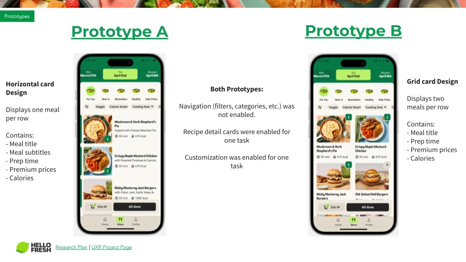
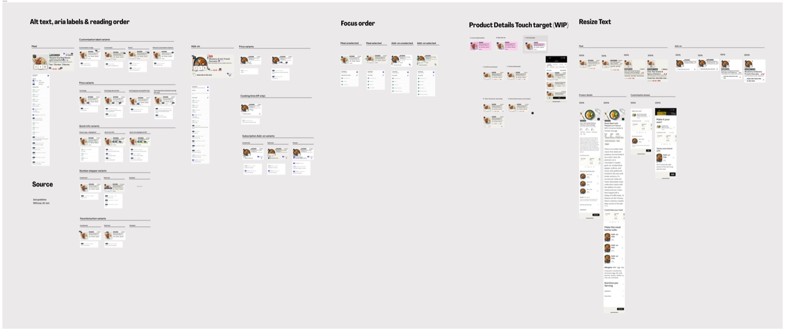
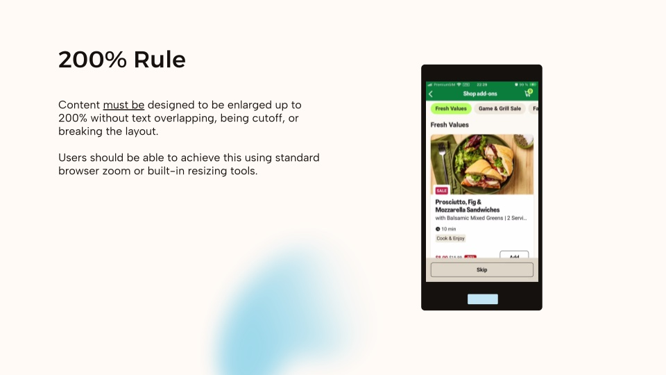
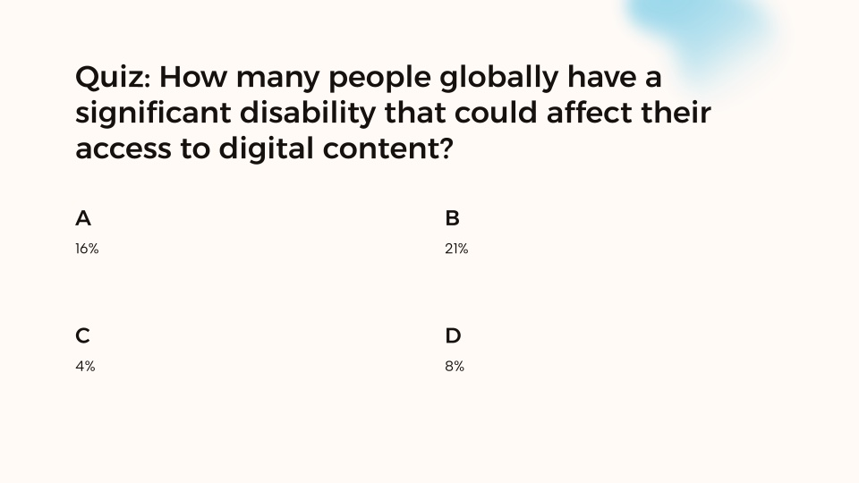

Mealkit products
- Cooking time and prep time
- Recipe steps and ingredients
- Serving size customisation
- Spice level indicators
- Dietary tags (vegetarian, gluten-free)
HelloFresh · Design Systems & Accessibility · 2025–2026
Designing HelloFresh's first accessible, multi-brand product card. WCAG 2.1 AA, OOUX, and a 50-variant component library.

01 · The challenge
This work was part of a larger store UI update to improve browsability for a growing assortment. The existing product card had grown unwieldy. New elements added over the years without revisiting the layout left it with inconsistent aesthetics and a height that required scrolling to see a single card on smaller devices.
As the core component of the store, where every meal added to an order starts, it needed a redesign. The company was consolidating its brand platforms, meaning all new components had to work across brands from the start. This was the first release to span both mealkit and ready-to-eat, each with fundamentally different product attributes.
02 · My role
I replaced another designer mid-project, picking up after usability testing had already validated a horizontal card layout over a grid layout.
I was brought in because of my previous work on the checkout, where I'd redesigned cart line items to surface product card attributes. That work gave me deep familiarity with the meal selection variants and which information best helped customers make decisions.
I partnered with the Design System team to create a modular, accessible product card using Object-Oriented UX principles, ensuring the component met design system standards and could be maintained long-term. This was HelloFresh's first design-led accessibility implementation, and I ran knowledge-sharing sessions so the team could replicate the approach on future projects.
Prototype A · horizontal Prototype B · grid

03 · Object-Oriented UX
Previously, multi-brand components only needed to work across mealkit brands, which share the same product attributes. Factor (Ready-to-Eat) changed everything.
To solve this complexity, I used Object-Oriented UX to map all product types and their attributes.
Identifying all product types (meals, add-ons, subscriptions) and their relationships.
Aligning with product on Jobs to be Done to determine what information is essential versus optional.
A component architecture that flexes based on content type.
Object mapping · Meals and add-ons

Attribute prioritisation · JTBD alignment

04 · Accessibility, by design
The European Accessibility Act (EAA), Directive (EU) 2019/882, became fully applicable on June 28, 2025. Our designs had to meet WCAG 2.1 AA standards. The deadline shaped the project timeline and made accessibility a core requirement from the start.
To understand what this meant in practice, I audited the existing meal selection experience using VoiceOver on my iPhone and MacBook. Learning the gestures and keyboard controls helped me grasp the gap between the visible UI and how screen readers actually interpret elements. It was eye-opening, and shaped every decision that followed.
Screen readers don't follow visual layout. They read elements in the order they appear in the code. Without deliberate structuring, this may not match the order users actually need. I used the OOUX attribute prioritisation to define reading order, ensuring screen reader users received information in the same hierarchy as sighted users. Product name first, then key attributes, then price.
WCAG requires content to work at 200% text size, and device analytics showed users browse on screens as small as 360px. Rather than truncating text, which cuts off meaning for users who need larger text or smaller devices, I defined character limits for every element and benchmarked Lieferando's approach of switching to vertical layouts at larger sizes.
Alt-text and ARIA labels aren't just technical metadata. They're the entire experience for screen reader users. I collaborated with UX Writing to ensure labels conveyed meaning, not just described elements. "Select Chicken Teriyaki", not "Button".

05 · The component library
The final component is a modular system covering every state and brand configuration. One source of truth for both mealkit and ready-to-eat surfaces.

06 · Knowledge sharing
I presented my process and recommendations to the UX design and research team, covering VoiceOver testing, annotation workflows, and WCAG requirements. I followed up with one-on-one mentoring sessions to help designers apply accessible design practices to their own projects.
200% text resizing

Quiz · Global disability stat

07 · Shipping
50+
Component variants across brands and states
7
Markets live on FactorUS, CA, DE, NL, BE, SE, DK
2
Brand platforms (Mealkit, Ready-to-Eat)
Q2 '26
Next HelloFresh experiment planned
In Q4 2025, the product card component launched on Factor across seven markets. We rolled out without an experiment because Factor's outdated UI could no longer support new features. Updating it was a prerequisite for planned platform improvements.
In Q1 2026, we A/B tested the new card on HelloFresh. Mixed results led us to iterate. We rolled back with a plan to re-test. I'm currently working on the next iteration, with a new experiment planned for Q2 2026.
08 · Reflections
What worked
What I'd do differently